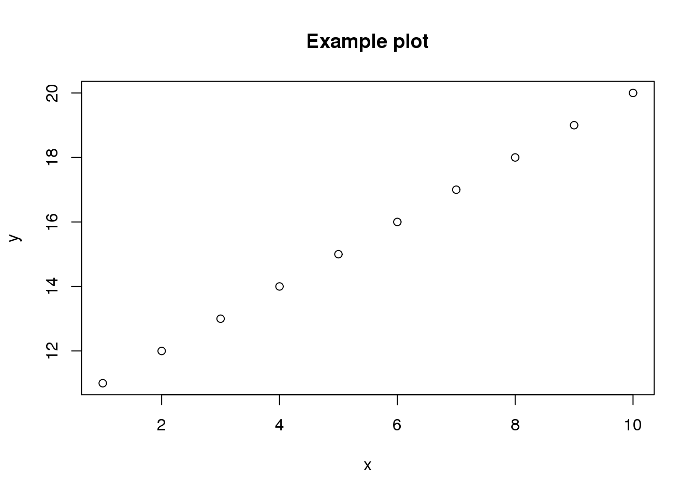

Last updated: 2016-01-04
Code version: 5d510b0ff5c4b0bb73b3b2cc3f58aef8f5c32bd2
This is a template for writing reports with R Markdown.
You can create a new file from the template using the command cp.
cp analysis/template.Rmd analysis/newfile.RmdExecutable code chunks are processed with knitr.
x <- 1:10
y <- 11:20Any plots are saved to the directory figure. The name of the chunk is used to derive the name of the file.
plot(x, y, main = "Example plot")
sessionInfo()R version 3.2.0 (2015-04-16)
Platform: x86_64-unknown-linux-gnu (64-bit)
locale:
[1] LC_CTYPE=en_US.UTF-8 LC_NUMERIC=C
[3] LC_TIME=en_US.UTF-8 LC_COLLATE=en_US.UTF-8
[5] LC_MONETARY=en_US.UTF-8 LC_MESSAGES=en_US.UTF-8
[7] LC_PAPER=en_US.UTF-8 LC_NAME=C
[9] LC_ADDRESS=C LC_TELEPHONE=C
[11] LC_MEASUREMENT=en_US.UTF-8 LC_IDENTIFICATION=C
attached base packages:
[1] stats graphics grDevices utils datasets methods base
other attached packages:
[1] knitr_1.10.5
loaded via a namespace (and not attached):
[1] httr_0.6.1 magrittr_1.5 formatR_1.2 htmltools_0.2.6
[5] tools_3.2.0 RCurl_1.95-4.6 yaml_2.1.13 rmarkdown_0.6.1
[9] stringi_0.4-1 digest_0.6.8 stringr_1.0.0 bitops_1.0-6
[13] evaluate_0.7